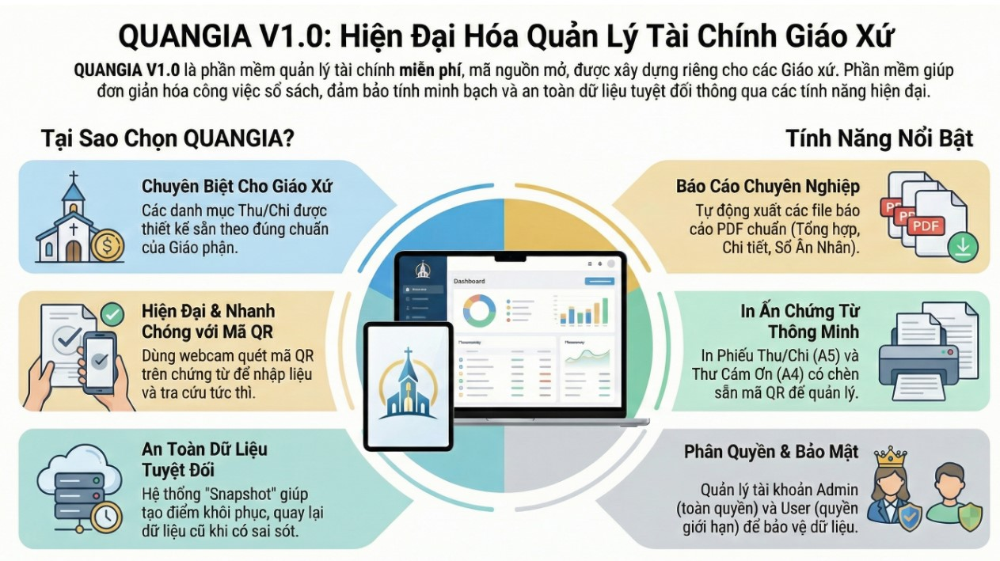

QUANGIA V1.0: Phần Mềm Kế Toán Chuyên Biệt Cho Giáo Xứ
QUANGIA V1.0: Giải Pháp Phần Mềm Kế Toán Chuyên Biệt Cho Giáo Xứ – Minh Bạch, Chính Xác & Dễ Sử Dụng
Đăng ngày 27 tháng 11, 2025, bởi tác giả
Tải về ứng dụng QUANGIA V1.0
Bạn có thể tải về ứng dụng QUANGIA V1.0 ( Hãy kéo xuống cuối bài viết để tải phần mềm/pw4gmail).
Xem video trên để tìm hiểu thêm về cách ứng dụng QUANGIA V1.0 hoạt động và các tính năng hữu ích của nó.
1. 📘 Giới thiệu QUANGIA V1.0
Công việc quản lý tài chính nơi Nhà Chúa luôn đòi hỏi sự tỉ mỉ, minh bạch và chính xác tuyệt đối. Thấu hiểu những khó khăn trong việc ghi chép sổ sách thủ công hay sử dụng các công cụ Excel phức tạp, chúng tôi trân trọng giới thiệu phần mềm QUANGIA V1.0.
Đây là giải pháp công nghệ tâm huyết được phát triển riêng cho cộng đồng Công giáo, giúp đơn giản hóa quy trình kế toán, tiết kiệm thời gian và lưu trữ dữ liệu an toàn.
🌟 Tại Sao Nên Chọn QUANGIA V1.0?
Phần mềm được thiết kế tối giản, tập trung vào các nghiệp vụ thực tế tại các Giáo xứ Việt Nam:
Dễ sử dụng: Giao diện Tiếng Việt thân thiện, người lớn tuổi hay không rành máy tính vẫn có thể sử dụng tốt.
Chuyên biệt: Tích hợp sẵn các hạng mục thu chi đặc thù (Tiền thâu, Xây dựng, Bác ái, Lễ hội, Xin lễ...).
Báo cáo chuẩn: Xuất ra các biểu mẫu PDF đẹp mắt, đúng chuẩn Giáo phận để in ấn và trình ký.
Công nghệ hiện đại: Hỗ trợ nhập liệu thông minh và bảo mật dữ liệu cao.
2. 📘 HƯỚNG DẪN SỬ DỤNG CHI TIẾT
Dưới đây là các bước để Quý vị làm chủ phần mềm ngay trong lần đầu tiên sử dụng.
1. 👉Đăng Nhập Hệ Thống
Sau khi tải về và cài đặt, mở biểu tượng QUANGIA trên màn hình, Quý vị sử dụng tài khoản quản trị viên mặc định sau:
📘 Tên đăng nhập: admin
📘 Mật khẩu: 123456
⚠️ LƯU Ý QUAN TRỌNG: Để bảo mật dữ liệu, ngay sau khi đăng nhập thành công, xin vui lòng vào menu: [Hệ Thống] -> [Quản lý tài khoản] để đổi mật khẩu mới.
2. 👉Nhập Liệu Thu Chi (Giao diện chính)
Tại màn hình chính, quy trình nhập liệu đã được tối ưu hóa:
Chọn Loại phiếu: Thu (Income) hoặc Chi (Expense).
Hạng mục: Chọn từ danh sách có sẵn (Tiền thâu, Xây dựng, Bác ái...).
Số tiền & Diễn giải: Nhập số tiền (tự động định dạng dấu phẩy) và ghi chú chi tiết.
Công nghệ hỗ trợ: Nút "Quét Phiếu/Hóa đơn (AI/QR)" giúp đọc dữ liệu tự động từ các phiếu in có mã QR hoặc hỗ trợ nhận diện văn bản (tùy phiên bản), giảm thiểu sai sót khi nhập tay.
3. 👉Xuất Báo Cáo & In Ấn
Không cần tính toán thủ công, chỉ cần vào menu [Chức năng] -> [Xem Báo Cáo], phần mềm cung cấp sẵn các mẫu:
Báo Cáo Tổng Hợp: Cân đối Thu - Chi trong tháng/quý/năm (Dạng Summary).
Sổ Chi Tiết: Liệt kê chi tiết từng giao dịch, ngày giờ, người thực hiện (Dạng bảng ngang).
Sổ Ân Nhân: Tự động lọc danh sách người dâng cúng để tri ân.
Báo Cáo Thường Niên: Mẫu tổng kết cuối năm (bao gồm tồn quỹ năm cũ chuyển sang).
👉 Tất cả báo cáo đều có thể xuất ra file PDF hoặc Excel để lưu trữ.
4. 👉Cấu Hình Thông Tin Giáo Xứ
Để báo cáo in ra có đầy đủ tên Giáo xứ, Giáo hạt và chữ ký đúng, Quý vị thực hiện một lần duy nhất:
Thử xuất một file PDF bất kỳ.
Hộp thoại cấu hình sẽ hiện ra. Tại đây, hãy nhập: Tên Giáo Phận, Giáo Hạt, Giáo Xứ và Người Lập Biểu.
Phần mềm sẽ tự động ghi nhớ cho các lần sau.
5. 👉An Toàn Dữ Liệu & Sao Lưu
Dữ liệu là tài sản quan trọng nhất. Trong menu [Hệ Thống]:
Tạo điểm khôi phục: Trước khi xóa sửa lớn, hãy tạo một điểm lưu.
Khôi phục (Undo): Nếu lỡ tay xóa nhầm, Quý vị có thể quay ngược thời gian về điểm đã lưu chỉ với 1 nút bấm.
3. 📘THÔNG TIN TÁC GIẢ & HỖ TRỢ
Phần mềm được xây dựng với tinh thần phục vụ, đóng góp công sức nhỏ bé vào công việc chung của Giáo hội. Mọi thắc mắc, báo lỗi hoặc góp ý nâng cấp, xin vui lòng liên hệ:
Tác giả: Trần Hoàng Giang
Email: tranhoanggiang@gmail.com
Ngày phát hành phiên bản V1.0: 01/11/2025
Kính chúc Quý Cha và Quý Ban Hành Giáo cùng Quý Vị luôn tràn đầy Hồng Ân Thiên Chúa và sử dụng phần mềm thật hiệu quả!
(Bản quyền phần mềm thuộc về tác giả Trần Hoàng Giang)
📩Mọi góp ý/ phát triển/Psw... xin liên hệ :
tranhoanggiang@gmail.com
link Tải về QUANGIA V1.0.zip ...Buy Me a Coffee to : tranhoanggiang@gmail.com